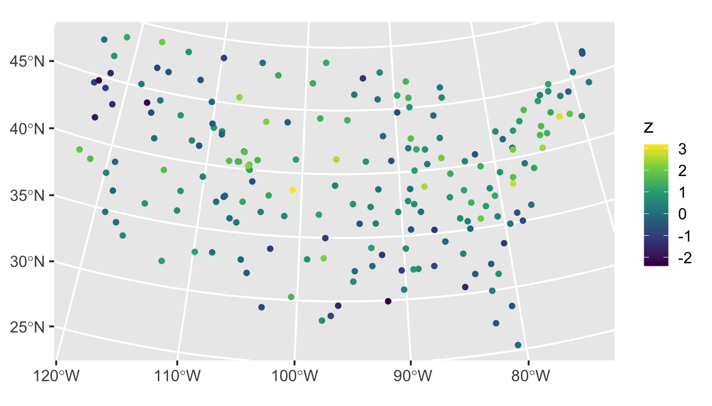
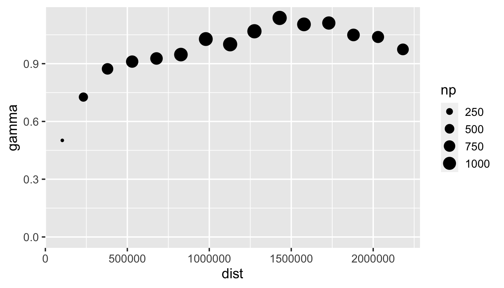
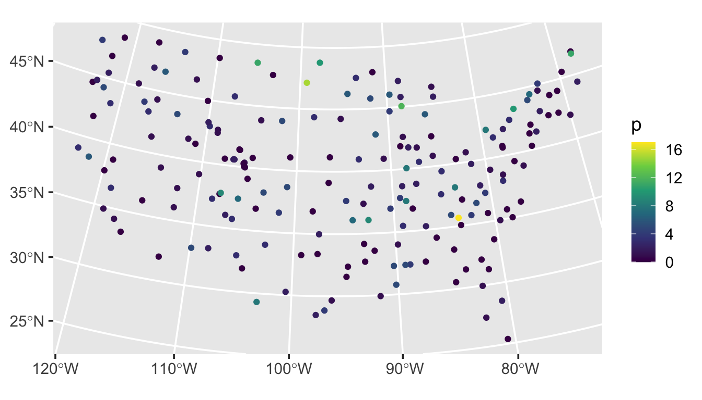

8 Simulating Data
Throughout this section, we will simulate spatially-correlated data using a variety of spmodel functions. It is often useful to simulate spatial data with “known” spatial covariance parameters and study the suitability of models fit to these data. We will use the spmodel package and ggplot2 package:
Goals:
- Simulate spatial Gaussian data using
sprnorm(). - Simulate spatial binary, proportion, count, and skewed data using
sprbinom(),sprbeta(),sprpois(),sprnbinom(),sprgamma(), andsprinvgauss().
8.1 Simulating Spatial Gaussian Data
We simulate Gaussian spatial data using sprnorm(). sprnorm() is similar in structure to rnorm() for simulating non-spatial Gaussian data. The first argument to sprnorm() is spcov_params, which is a spatial covariance parameter object created with spcov_params():
params <- spcov_params("exponential", de = 1, ie = 0.5, range = 5e5)When the type argument to coef() is "spcov", the estimated spatial covariance parameters are returned as an spcov_params object, naturally usable simulation-based contexts that require conditioning on these estimated parameters.
sprnorm() simulates data at each location in data for each of n samples (specified via n) with some mean vector (specified via mean). We simulate one realization of zero-mean Gaussian data with spatial covariance structure from params at each location in the sulfate data by running
We visualize this realization by running
ggplot(sulfate, aes(color = z)) +
geom_sf() +
scale_color_viridis_c() +
theme_gray(base_size = 14)
We visualize an empirical semivariogram of this realization by running
esv_out <- esv(z ~ 1, sulfate)
ggplot(esv_out, aes(x = dist, y = gamma, size = np)) +
geom_point() +
lims(y = c(0, NA)) +
theme_gray(base_size = 14)
8.2 Simulating Other Spatial Data
spmodel has a variety of additional simulation functions used to simulate binary, proportion, count, and skewed data:
- Binary data:
sprbinom() - Proportion data:
sprbeta() - Count data:
sprpois()andsprnbinom() - Skewed data:
sprgamma()andsprinvgauss()
With these simulation functions, the spatial covariance parameters and mean vector are specified on the appropriate link scale. For sprbinom() and sprbeta(), this is the logit link scale. For the other functions, this is the log link scale. We simulate one realization of Poisson data where on the link scale, the mean is zero and the spatial covariance structure is specified via params, by running
sulfate$p <- sprpois(params, data = sulfate)We visualize this realization by running
ggplot(sulfate, aes(color = p)) +
geom_sf() +
scale_color_viridis_c() +
theme_gray(base_size = 14)
Simulating spatial data in spmodel requires the Cholesky decomposition of the covariance matrix, which can take awhile for sample sizes exceeding 10,000. Regardless of the number of realizations simulated, this Cholesky decompsition is only needed once, which means that simulating many realizations (via samples) takes nearly the same time as simulating just one.
8.3 R Code Appendix
library(spmodel)
library(ggplot2)
params <- spcov_params("exponential", de = 1, ie = 0.5, range = 5e5)
set.seed(1)
sulfate$z <- sprnorm(params, data = sulfate)
ggplot(sulfate, aes(color = z)) +
geom_sf() +
scale_color_viridis_c() +
theme_gray(base_size = 14)
esv_out <- esv(z ~ 1, sulfate)
ggplot(esv_out, aes(x = dist, y = gamma, size = np)) +
geom_point() +
lims(y = c(0, NA)) +
theme_gray(base_size = 14)
sulfate$p <- sprpois(params, data = sulfate)
ggplot(sulfate, aes(color = p)) +
geom_sf() +
scale_color_viridis_c() +
theme_gray(base_size = 14)